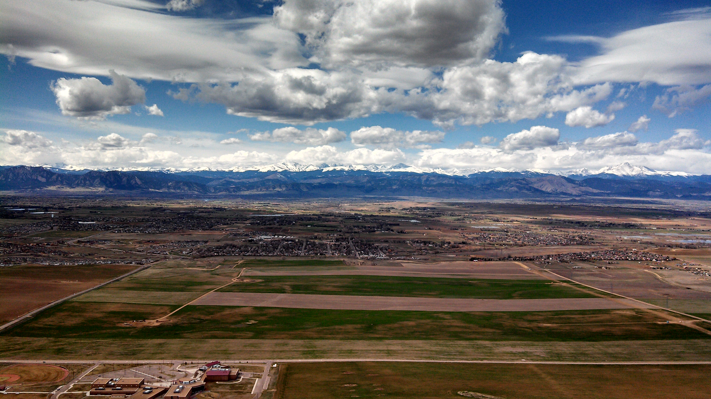
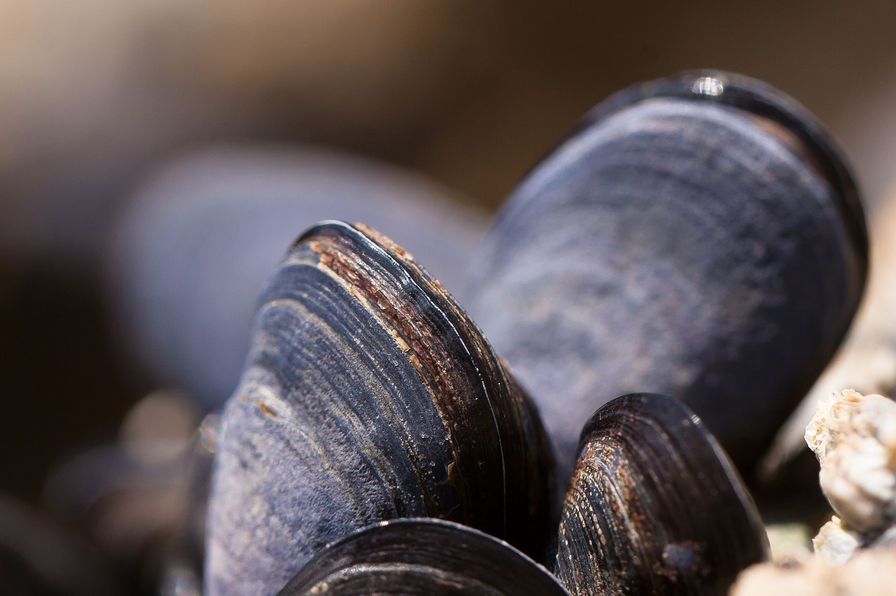
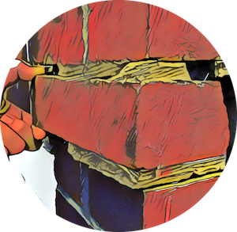

Climate risk
Sea-level change & coastal adaptation
Statistical calibration, extreme-value models, and decision-making under deep uncertainty—especially for coastal defense and adaptation.
Computational Scientist · Climate Data Science · Education Data Science
I’m Tony Wong, an associate professor in the School of Mathematics and Statistics at Rochester Institute of Technology. I use mathematics, statistics, and computation to understand uncertain systems—and help people make better decisions about them.
Research
I study how uncertainty in physical and statistical models affects the decisions people make. My work sits at the intersection of applied math, climate modeling, risk analysis, data science, and education research.
Climate risk
Statistical calibration, extreme-value models, and decision-making under deep uncertainty—especially for coastal defense and adaptation.
Education research
How students learn with computation, how computational tools shape their thinking, and how they develop practices for solving and communicating technical problems.
Education research
I use educational data to study student support, learning, retention, and persistence, including the impact of programs such as Learning Assistants.

In the classroom
I draw on research and real problems to show that mathematics is more than a list of prerequisites. It is a language for asking sharper questions, testing ideas, and understanding nearly every part of science.
Open work
Research is stronger when the models, code, and ideas are shared. These collaborations build tools for studying climate and coastal risk.

Open-source organization
Modeling climate and coastal risk and uncertainty.

Get in touch
Students, collaborators, and consulting partners are welcome to reach out.
Office
GOS-2232
Email
Tony.Wong@rit.edu
Institution
School of Mathematics and Statistics
Rochester Institute of Technology
Rochester, NY 14623